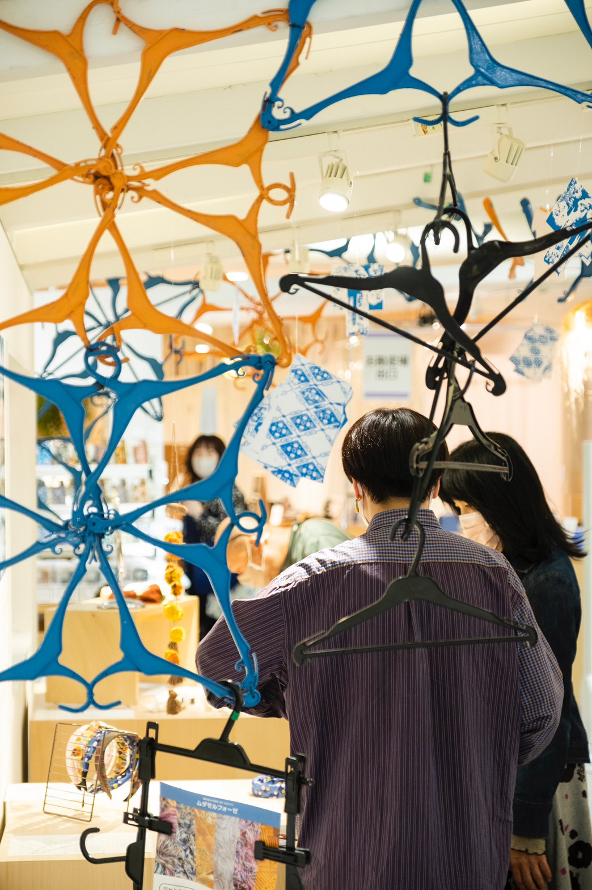
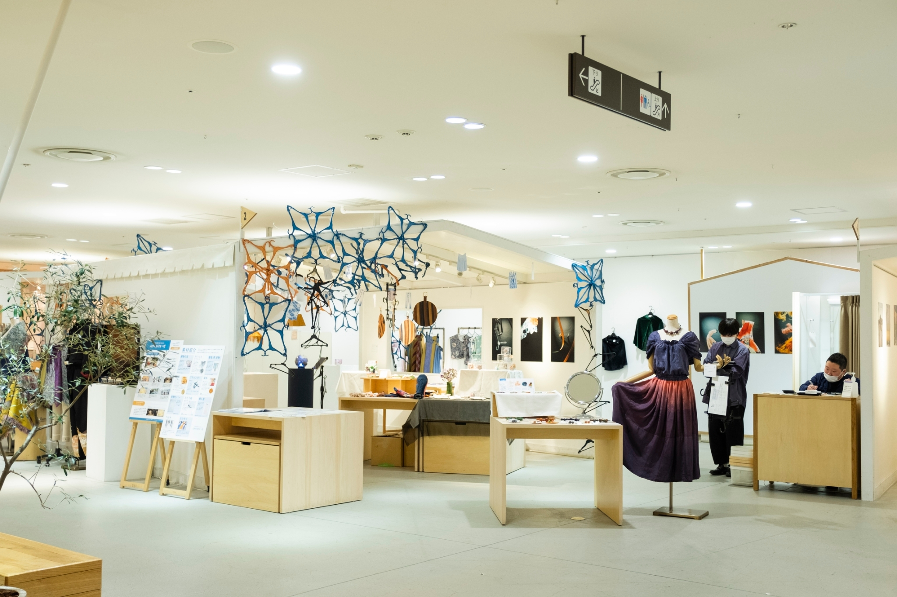
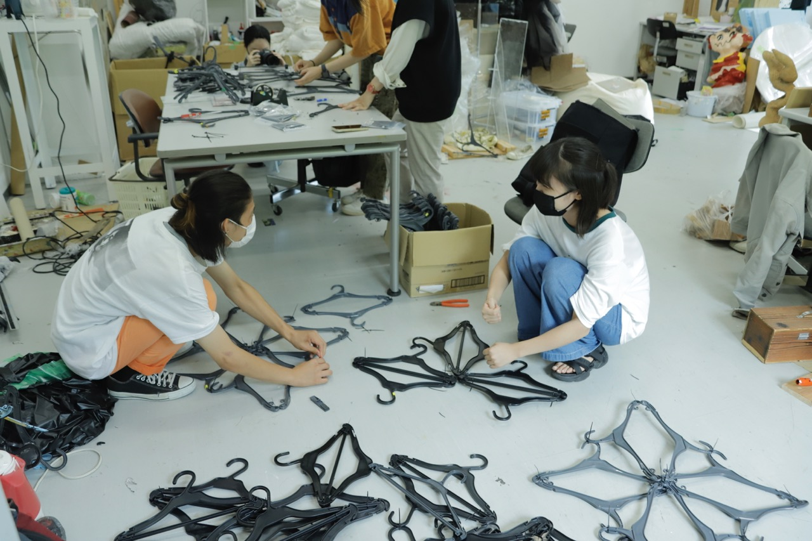

無駄を新たな可能性へ導くプロジェクト「ムダモルフォーゼ」
Planning, Operating ,2022
Mudamorphose project team
大量生産と大量消費のアパレル業界における売れ残り商品の廃棄問題に着目した『ムダモルフォーゼプロジェクト』。このプロジェクトでは、滋賀県唯一の芸術大学、成安造形大学の在学生・卒業生が、着物やネクタイ・ベルトなどの廃棄物からアートを生み出し、作品作りに取り組んできました。この展示販売会では、ムダモルフォーゼプロジェクトを通して制作した「無駄（廃棄物）を変身（メタモルフォーゼ）させ、新たな価値をもたせた作品」が並びます。
商品の品質を保持するための販売期間を過ぎた衣類や織物の製織工程で排出される耳糸といった、これまで廃棄されてきた物を素材として利用し成安造形大学の在学生・卒業生が作品を制作しました。着物を使用したブックカバーやワンピース、紋紙やステンレスメッシュ（金属の織物）の製造過程で排出される線屑を使用したランプ、ビニールを使用したアクセサリーなど多種多様な作品が揃います。
ムダモルフォーゼとは？


うめだスークでの展示販売

うめだスークでの展示販売

店舗装飾制作風景
【素材提供】
京都祭禮縣装品研究所
株式会社川島織物セルコン
アサダメッシュ株式会社
エイチ・ツー・オー リテイリング株式会社
【展示販売会概要】
無駄を新たな価値に導くプロジェクト ムダモルフォーゼ
主催：ムダモルフォーゼ運営委員会
協力：エイチ・ツー・オー リテイリング株式会社・成安造形大学 未来社会デザイン共創機構・地域連携推進センター
日時：10月19日(水)～10月25日(火) 10:00～20:00 (最終日は16:00まで)
場所：阪急うめだ本店10階『うめだスーク』中央街区